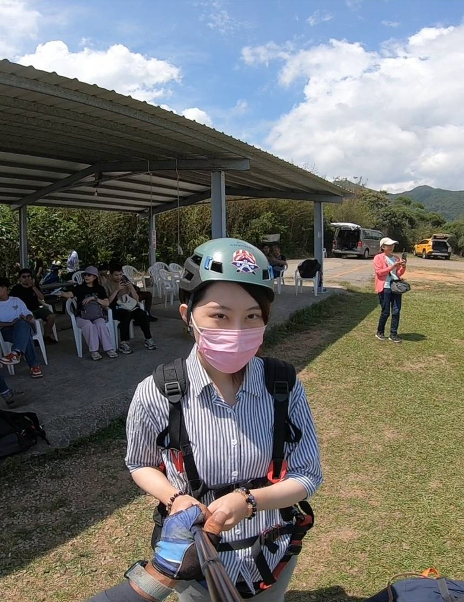

Front-end engineer
Web Design
您好 我是熊翊雯 我是桃園人
之前從事過的行業有服務業與工廠的工作，與這門課程非相關，但是對於大學期間有觸過一點程式
語言python和APP程式設計語言的我，對此有興趣想學習一技之長，因此報名了就業輔導課程，
藉此希望能夠找到工作或實習的機會提升自己的專業技能。
EXPERIENCE WORK
天隆電子工廠 2023
113.08 ~ 113.12 品檢員
- 進貨原物料、半成品檢驗與品質判定。
- 進出貨檢測。
- 不良品分析、紀錄、統計、追蹤
- 出貨檢驗異常處理單開立、追蹤、結案。
- 出貨抽檢、製程巡檢、檢驗報告維護。
台北海洋科技大學
2019-2020
- HACCP A,B證書
- 食品檢驗丙級
- 化學檢驗丙級